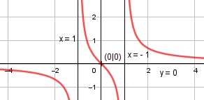

Aufgabe 124 x f(x) = --------- (x2 - 1) Quotientenregel erste Ableitung: u = x, u' = 1 v = x2 - 1, v' = 2x 1 * (x2 - 1) - 2x * x f'(x) = ----------------------- (x2 - 1)2 x2 - 1 - 2x2 -x2 - 1 f'(x) = ------------- = ---------- (x2 - 1)2 (x2 - 1)2 Quotientenregel zweite Ableitung: u = -x2 - 1, u' = -2x v = (x2 - 1)2 Kettenregel: v' = 2 * 2x * (x2 - 1) = 4x * (x2 - 1) -2x*(x2 - 1)2 - 4x*(x2 - 1)*(-x2 - 1) f''(x) = -------------------------------------- (1 - x2)4 (x2 - 1)*[- 2x * (x2 - 1) - 4x(-x2 - 1) f''(x) = ---------------------------------------- (x2 - 1)4 -2x3 + 2x + 4x3 + 4x f''(x) = ---------------------- (x2 - 1)3 2x3+ 6x f''(x) = --------- (x2 - 1)3 Zur Beurteilung, ob f'''(x) ≠ 0 : (Begründung siehe Aufgabe 105) u = 2x3 + 6x, u' = 6x2 + 6 u' 6x2 + 6 f'''(x) = --- = ----------- ≠ 0 für alle x ≠ 1,-1 v (x2 - 1)3 Polstellen, Nenner = 0: x2 - 1 = 0|+1 x2 = 1|ⱱ x = ± 1 --> senkrechte Asymptote bei x = 1 und -1 Definitionsbereich: -∞ < x < ∞, x ≠ 1, -1 Waagerechte Asymptote: x f(x) = x : x2 - 1 = 0 + ---------- (x2 - 1) x 0 + ---------- geht gegen 0 für x --> ± ∞ (x2 - 1) Wertebereich: -∞ < f(x) < ∞ Symmetrie zur y-Achse bzw. zum Punkt (0|0): (-x) -x f(-x) = ----------- = -------- ≠ f(x) (-x)2 - 1 x2 - 1 --> keine Achsensymmetrie x -f(-x) = -------- = f(x) x2 - 1 --> Punktsymmetrie Nullstellen: f(x) = 0 x -------- = 0 |*(x2 - 1) x2 - 1 x = 0 N(0|0) Schnittpunkt mit der y-Achse: x = 0 0 f(0) = -------- = 0 02 - 1 Sy(0|0) Extrempunkte: f'(x) = 0 -x2 - 1 ----------- = 0 |*(x2 - 1)2 (x2 - 1)2 -x2 - 1 = 0 | +x2 x2 = -1 |ⱱ --> keine Lösung --> keine Extrempunkte Wendepunkte: f''(x) = 0 2x3 + 6x ----------- = 0 |*(x2 - 1)3 (x2 - 1)3 2x3 + 6x = 0 2x * (x2 + 3) = 0 2x = 0; f(0) = 0 --> WP(0|0) x2 + 3 = 0 |-3 x2 = -3 |ⱱ --> keine Lösung --> kein weiterer Wendepunkt Graph:
